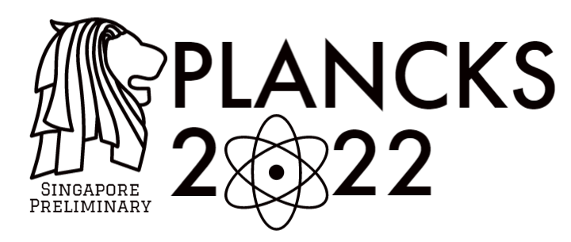
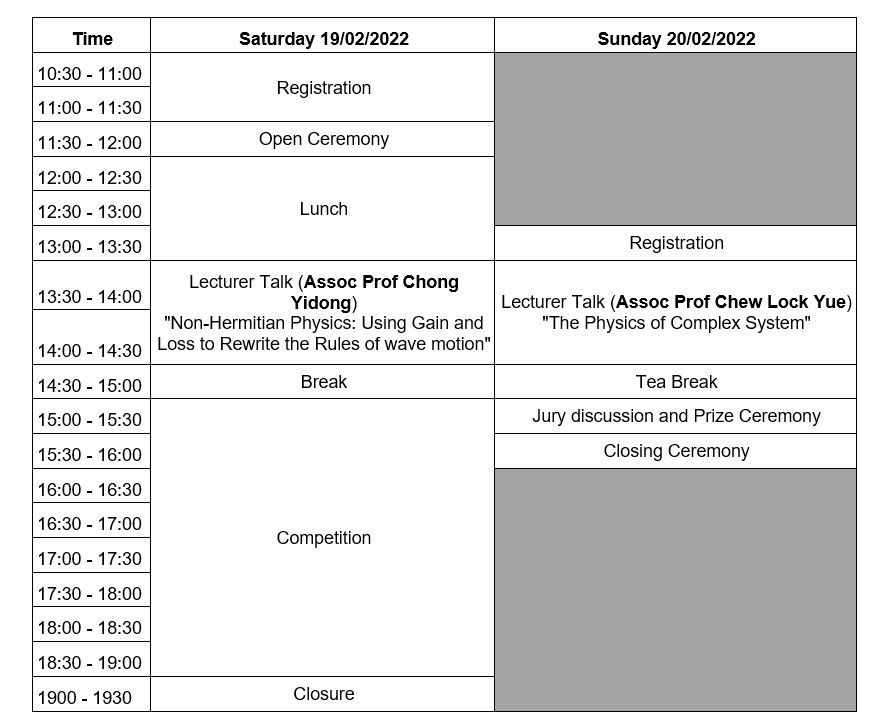

About
PLANCKS (Physics League Across Numerous Countries for Kick-Ass Students) is an international theoretical physics competition held annually. Teams of 3-4 Bachelor’s and Master’s students compete to solve challenging physics problems for a duration of 4 hours. The 2022 international edition of PLANCKS will take place from 5th to 8th May 2022 in Munich, organised by the Faculty of Physics of the LMU Munich and hosted by the DPG (German Physical Society) as a member of IAPS (International Association of Physics Students).
The PLANCKS 2022 Singapore Preliminary will take place on 19th and 20th February 2022. The Singapore Preliminary is organised by the Odyssey Programme, under the School of Physical and Mathematical Sciences, Nanyang Technological University. The winning team will be selected as the Singapore representative in the international PLANCKS.
Schedule
The PLANCKS 2022 Singapore Preliminary will be held across 2 days. The detailed programme flow is as follows:

Guest Lectures
On top of the competition, there is a scientific programme planned for participants to engage in. This includes guest lectures on various topics in Physics. This year, our guest lecturers are Assoc Prof Chong Yi Dong and Assoc Prof Chew Lock Yue. Details of the talks are shown below:
Guest Lecture 1
Title: Non-Hermitian Physics: Using Gain and Loss To Rewrite the Rules of Wave Motion Speaker: Associate Professor Chong Yidong Date: 19 February 2022 (Saturday) Time: 1.30pm - 2.30pm Venue: NTU SPMS LT1
Abstract
Waves passing through certain media can undergo amplification or dissipation, which are ”non-Hermitian” processes that increase or decrease the energy carried in the waves. In the simplest case, this just causes the wave to increase or decrease in amplitude as it moves. However, physicists have found ways to create synthetic non-Hermitian media that cause waves to behave in much more unusual and interesting ways. This talk describes several non-Hermitian phenomena, including coherent perfect absorption, parity/time-reversal symmetry, exceptional points, and non-Hermitian Dirac waves.
Biography
Yidong Chong graduated with a BSc in Physics from Stanford University in 2003, and received a PhD in Physics from MIT in 2008. After working from 2008-2012 as a postdoctoral researcher at Yale University, in 2012 he joined Nanyang Technological University as faculty member. His research interests span a variety of topics in theoretical photonics and condensed matter physics, including topological photonics and non-Hermitian photonics.
Guest Lecture 2
Title: The Physics of Complex Systems Speaker: Associate Professor Chew Lock Yue Date: 20 February 2022 (Sunday) Time: 1.30pm - 2.30pm Venue: NTU SPMS LT1
Abstract
In this talk, I will describe what is a complex system, why it is important to study and investigate complex system and give real-world examples of complex system. Complex system spans a great diversity of fields, encompassing the field of biology, economics, neuroscience, environmental science, social science, computer science, and engineering. To unravel complex systems, physicists have a unique way of uncovering organizing principles and universal behaviour that underlie the systems. I will show the key discoveries of physicist and current research in this respect, and then forecast on the potential future contribution that may arise from this exciting field.
Biography
Assoc Prof Chew Lock Yue is with the School of Physical and Mathematical Sciences NTU. He obtained his Ph.D. degree in Theoretical Physics from National University of Singapore. His research interest is in the fundamental physical mechanisms and organization principles within complex systems and their dynamics, where he had performed extensive research through the paradigm of statistical and nonlinear physics. His current research focuses are on the forecasting and nowcasting of complex systems; machine-learning applications in complex systems; and causal modelling of complex systems.
Contact Information
Email: spmsodysseycomm@e.ntu.edu.sg Instagram: https://www.instagram.com/odysseyprogramme/ Telegram: https://t.me/odysseyprogramme Website: https://odysseyprogramme.github.io/ Linktree: https://linktr.ee/odysseyprogramme